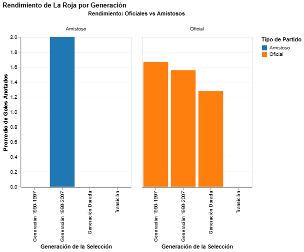

Bienvenido a mi entrega individual. A continuación se presenta la crónica y la visualización de datos correspondiente al proyecto.
Gráfico generado a partir del análisis de datos:

Aquí va el cuerpo principal de tu crónica redactada para la webstory.